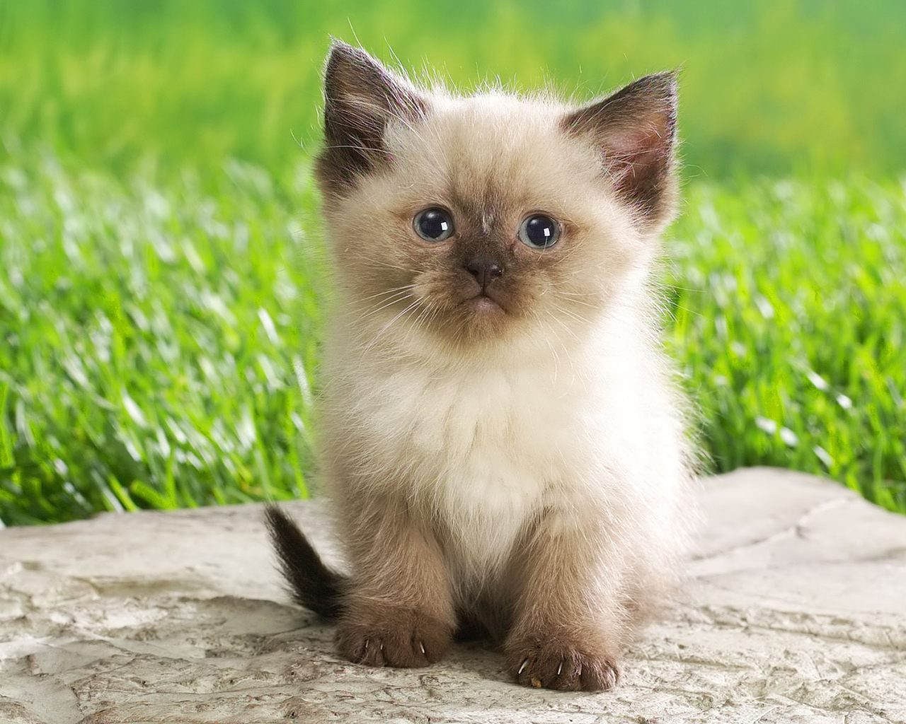

Mi mascota es un gato
NOMBRE: Crispis
EDAD: 1 año y 8 meses
COLOR DE OJOS: azules
IMAGEN DE GATO BEBÉ:

DESCRIPCIÓN: Es un gato tranquilo, le gusta la whiskas, tiene un hermano adoptivo gato llamado Rayas.
Parece una bolita de pelos andante, le gusta cazar lagartijas y recostarse en el pasto. Su nombre se debe a que
su pelaje parece leche con choco Krispis :), llegó cuando recién tenía unos días de nacido y ahora es muy feliz.
IMAGEN DE GATO ADULTO: